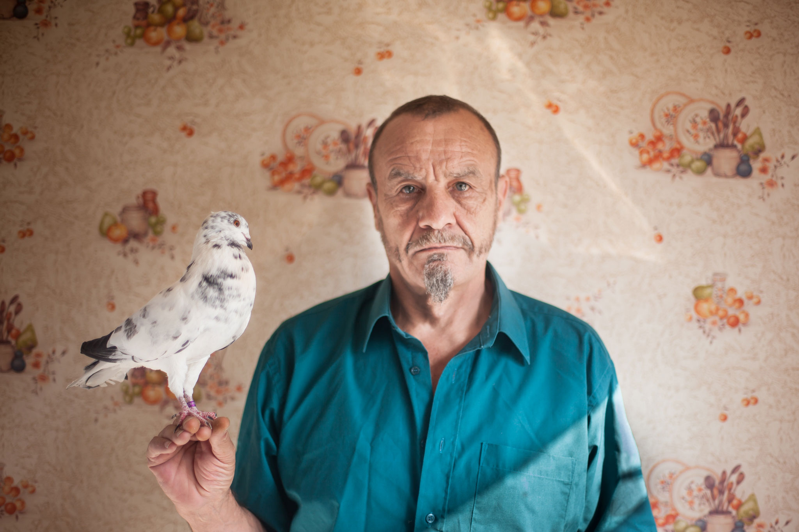
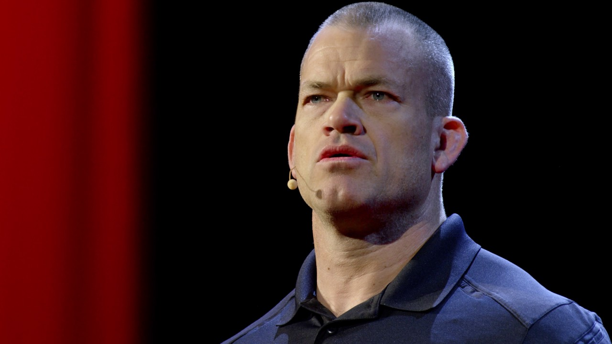

Online dashboard of the covid-19 pandemic from the John Hopkins University. A collection of public health information from hospitals across the country.
Read More

Breeding pigeon thieves is a lost art no one has ever heard about. Thief pouters in the past were trained to seduce other messenger birds to trap them and intercept messages. In today's day training competitive thieves is a hobby for pigeon enthusiasts.
Read More

Retired Navy Seal officer Jocko Willink has been in inspiration for young men, and corporate leaders across the country. Advicating the ideology of having extreme ownership over your life, and as a leader whether in an office or under deployment.
Read More
Informational data during the COVID-19 pandemic is at an all time high. As countries look toward tech companies to innovate contract tracking apps to inform citizens of potential viris carries. Information security experts stress the dangers of this technology post-COVID-19.
Read More
Netflix's new animated series Midnight Gospel introduces long form discussion through a space traveling webcaster Clancy. Traveling to different dimensions, Clancy converses with a variety of philosophers, personalities, and experts in a saturated acid trip cartoon.
Read More
David Goggins is the closest we will come to a real life Superman. In his autobiography Can't Hurt Me, Goggins describes some of the most horrible pain he has indured self-inflicted in the persuit of defying the voice in his head to give up.
Read More